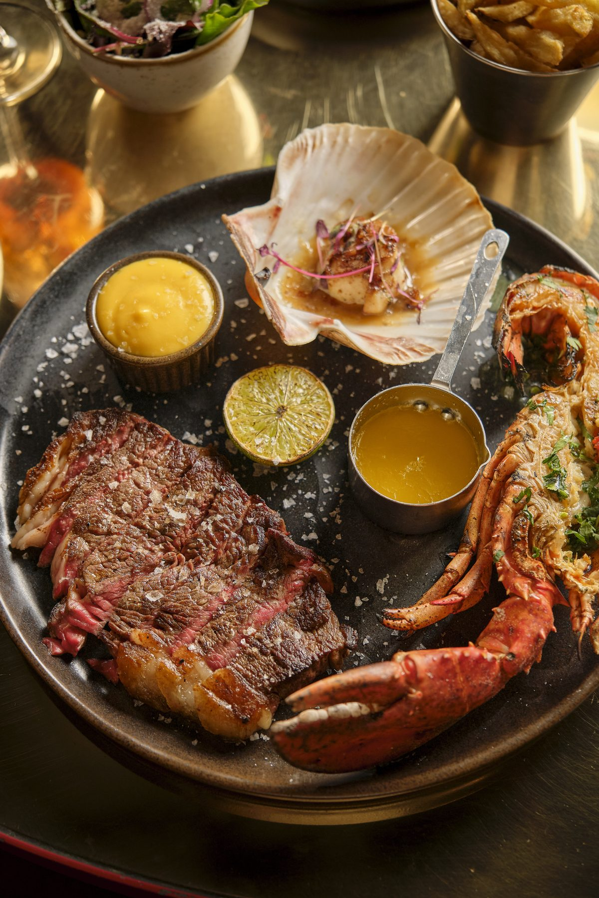

Three boards, cooked over fire: steak and chips at £45, surf and turf at £70, or the full lobster board at £80. Every board comes with ninety minutes of free-flowing drinks for the whole table.
"Lobster and steak bottomless in the City — unreal. Felt special without being stuffy."
Daniel P. · Google"Perfect post-work weekend brunch. Great fire-cooked food and generous pours."
Rachel M. · OpenTable"Surf and turf brunch done right. Book the £80 tier if you want the full spread."
Chris B. · Googletemper City serves the best bottomless brunch in the City of London — a lobster & steak feast over open fire, every Saturday near Bank. Think surf and turf sharing boards, free-flowing drinks and a lively soundtrack, minutes from Bank, Moorgate and Liverpool Street. If you’re after a bottomless brunch near Bank or in the Square Mile, this is it.
“Two boards. Ninety minutes. The only question: which one’s yours.”
Same oysters, sides and sauces on both City boards. The £80 board adds grilled lobster and upgrades the drinks list.
A discretionary 15% service charge will be added to your bill. Please inform your server of any allergies.

temper Soho on Broadwick Street runs Saturday bottomless brunch from £45pp — steak, tacos and smashed cheeseburgers from 12pm. See the Soho Bottomless Brunch.
This is not your standard bottomless brunch. Half a grilled Cornish lobster, 28-day dry-aged British steak, a seared scallop and a chargrilled black tiger prawn — on one plate, cooked over open fire in our City kitchen.
It opens with freshly-shucked oysters, finishes with béarnaise and chimichurri, and runs alongside ninety minutes of free-flowing wine, beer and cocktails.




Saturdays at temper City. Tables of two through twelve. For larger parties email reservationsmanager@temperrestaurant.com.
temper City is at 2 Angel Court, 30 Throgmorton Street, EC2R 7HJ — a short walk from Bank, Moorgate and Liverpool Street. Open fire, dry-aged steak and free-flowing drinks every Saturday.
Every Saturday 12pm–4pm
Tables of 2–12 online. 12+ email events.
Bottomless is for the whole party. Mention dietary requirements when you book.
Saturdays at the open kitchen counter – flames, music and a board built for sharing. Both packages include:
Searching for the best bottomless brunch in the City of London? temper City is built for it. Located at 2 Angel Court, 30 Throgmorton Street, EC2R 7HJ — a short walk from Bank, Moorgate and Liverpool Street — we bring open fire, dry-aged steak and free-flowing drinks to the Square Mile every Saturday.
Where most City bottomless brunches end with eggs and pancakes, ours finishes with surf and turf: a 28-day dry-aged British steak, half a grilled Cornish lobster (on the £80 board), a seared scallop and a chargrilled black tiger prawn – paired with ninety minutes of unlimited wine, beer and cocktails.
Brunch at temper isn’t just about unlimited drinks. It’s about watching your food cooked over open flame, the sound of meat hitting the grill, and a board worth sitting at the counter for. We use British dry-aged beef, hand-shucked oysters, hand-dived scallops and Cornish lobster – not the standard brunch fare.
A central City of London address, space for tables of two through twelve, and the kind of atmosphere that makes brunch feel like a real event – for birthdays, anniversaries, work celebrations and long Saturday lunches.
Confirmed in seconds. Free to cancel. Up to eight online, nine or more through the events team.
9+ · Soho · City · Bar-B-Q & Crabshack · Opening list